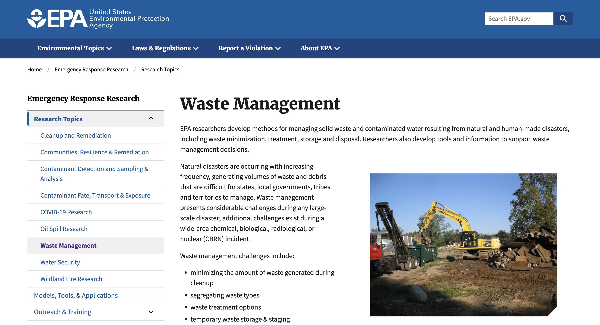

Learn More About Waste Management
Learn How to Recyle

"Municipal solid waste generation worldwide is forecast to grow more than 75 percent between 2020 and 2050, if no urgent action is taken. That would put global waste generation at nearly 3.8 billion metric tons in the latter year, up from 2.13 billion tons in 2020."
- statista.com
"A 2018 report from epa.gov revealed that nearly half of the waste produced in the U.S. is disposed of directly in landfills. The biggest contributor to the volume of landfills was food scraps and other food waste, such as supermarket discards. The best thing to do with this type of waste is to divert it to aerobic digestors, which can turn it into a rich compost for use in fields and gardens."
- electricrate.com